| Fruta o Verdura | Descripcion | Imagen |
| Manzana | La manzana contiene fibra, vitamina C, antioxidantes y agua. Ayuda a mejorar la digestion, contribuye a mantener una alimentacion saludable y puede ayudar a cuidar la salud del corazon. Tambien aporta energia y es facil de consumir. | < 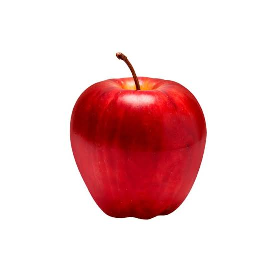 > |
| Aguacate | El aguacate contiene grasas saludables, fibra, potasio, vitamina E y vitaminas del grupo B. Ayuda al buen funcionamiento del organismo, contribuye a la salud del corazon y puede ayudar a mantener una buena digestion. Tambien es un alimento nutritivo y energetico. | < 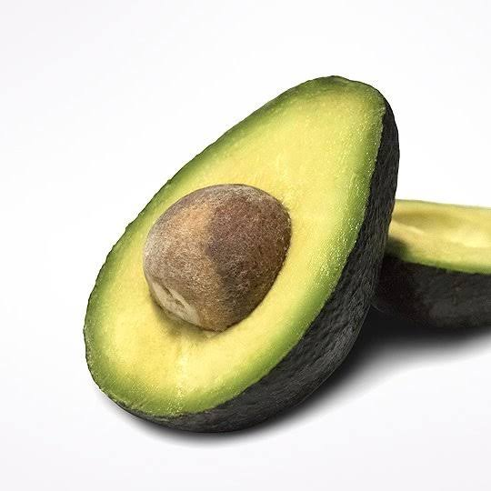 > |
| Mango | El mango es una fruta rica en vitamina C, vitamina A, fibra y antioxidantes. Ayuda al funcionamiento del sistema inmunologico, contribuye al cuidado de la piel y de la vista. Tambien contiene agua y aporta energia al organismo. | 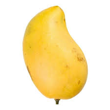 |
| Platano | El platano contiene potasio, fibra, vitamina B6 y carbohidratos. Aporta energia al organismo y ayuda al funcionamiento normal de los musculos. Tambien puede contribuir a una buena digestion y es una fruta practica para consumir. | 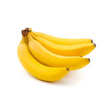 |
| Tuna | La tuna contiene agua, fibra, vitamina C, minerales y antioxidantes. Ayuda a mantener una buena digestion y aporta nutrientes al organismo. Es una fruta refrescante que puede formar parte de una alimentacion equilibrada. | 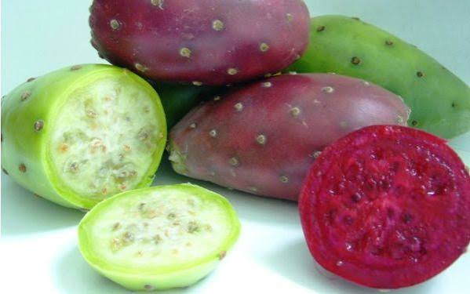 |
| Fresa | La fresa contiene vitamina C, fibra, agua y antioxidantes. Ayuda al funcionamiento del sistema inmunologico y contribuye al cuidado de la piel. Es una fruta que puede complementar una alimentacion saludable. | 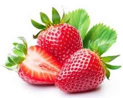 |
| Lechuga | La lechuga contiene mucha agua, fibra, vitamina A, vitamina K y minerales. Ayuda a mantener una buena hidratacion y digestion. Es un alimento ligero que puede acompañar diferentes comidas y aportar nutrientes. | 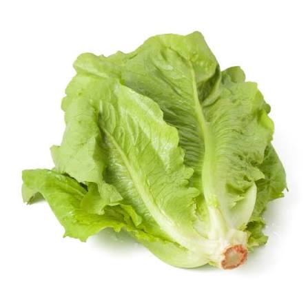 |
| Zanahoria | La zanahoria contiene vitamina A, fibra, antioxidantes y minerales. Contribuye al cuidado de la vista y ayuda al buen funcionamiento del organismo. Puede consumirse cruda o cocida. | 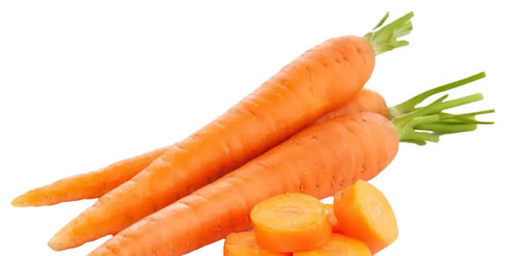 |
| Jitomate | El jitomate contiene vitamina C, vitamina A, agua y antioxidantes. Aporta nutrientes importantes y puede ayudar a proteger las celulas del organismo. Puede consumirse crudo o cocinado. | 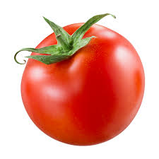 |
| Cebolla | La cebolla contiene vitamina C, fibra, minerales y compuestos antioxidantes. Puede contribuir al funcionamiento del sistema inmunologico y a una buena digestion. Tambien se utiliza para dar sabor a diferentes comidas. | 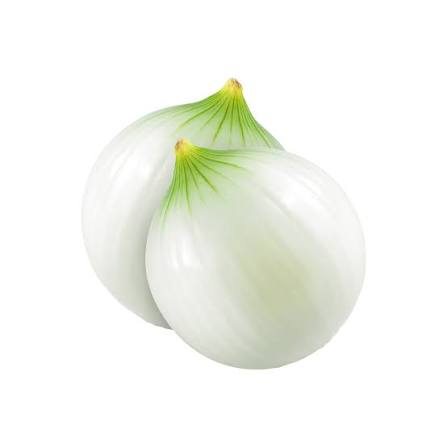 |
| Calabaza | La calabaza contiene agua, fibra, vitaminas y minerales. Ayuda a complementar una alimentacion equilibrada y puede contribuir a una buena digestion. Es un alimento que puede prepararse de diferentes formas. | 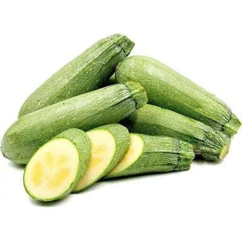 |
| Chayote | El chayote contiene agua, fibra, vitamina C, folato y minerales. Es un alimento ligero que ayuda a complementar una alimentacion saludable. Su contenido de agua y fibra puede contribuir a una buena digestion. | 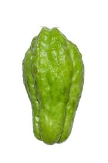 |